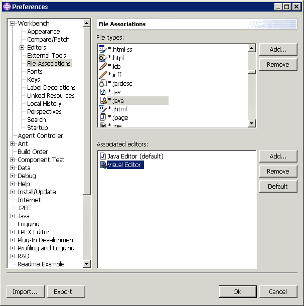

Eclipse provides two editors for editing Java source files: a text-based editor and a Visual Editor. By default, when you create a new class, the non-visual editor opens. When you open an existing .java file, the editor that you last used for editing that file opens.
To change the default editor that opens for .java files:
Note: Changing the default Java editor affects what happens when you open any .java file, including JSP files and servlets.

Related concepts
Visual Editor for Java
Related tasks
Launching the Visual Editor for Java